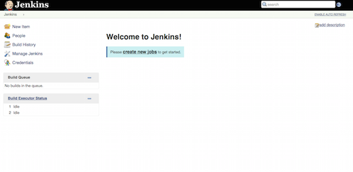

Difficulty: 2
Time: 10 minutes
In this article, you will learn how to install Jenkins on a COMPANY_NAME Cloud Server running Ubuntu 14.04.1 LTS. Jenkins is an application often used for continuous integration pipelines, allowing for the management and monitoring of project build jobs.
The following steps assume you have root access and have terminal access. All commands can be ran via SSH.
wget -q -O - http://pkg.jenkins-ci.org/debian/jenkins-ci.org.key | apt-key add -
echo deb http://pkg.jenkins-ci.org/debian binary/ > /etc/apt/sources.list.d/jenkins.list
apt-get update
apt-get install jenkins
Assuming your COMPANY_NAME Cloud Server is publicly accessible at bpcs.testserver.com, if you open bpcs.testserver.com:8080 in a web browser, the Jenkins homepage should display

In this article, you have installed a fully functional instance of Jenkins on your COMPANY_NAME Cloud Server. For information about adding a new job in Jenkins, check out Adding A New Job In Jenkins. For general information about Jenkins, visit the main Jenkins website at https://jenkins-ci.org.
Have questions? Email us at clouddocs@godaddy.com or leave a comment.